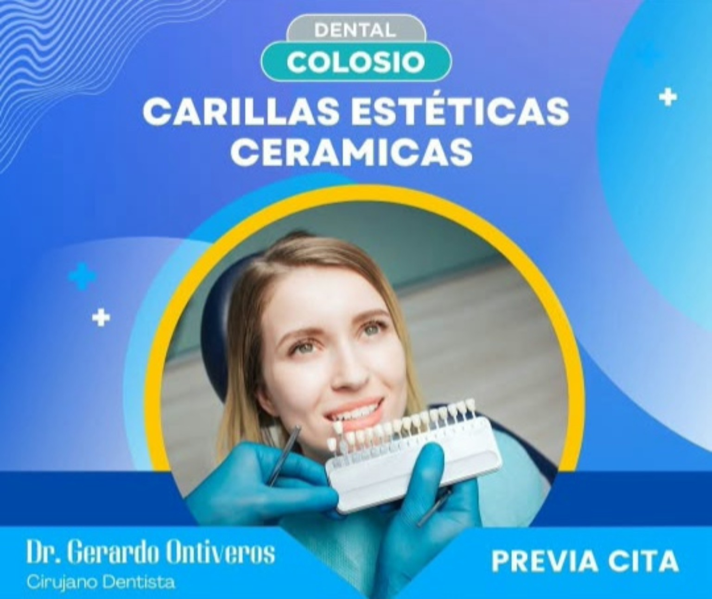
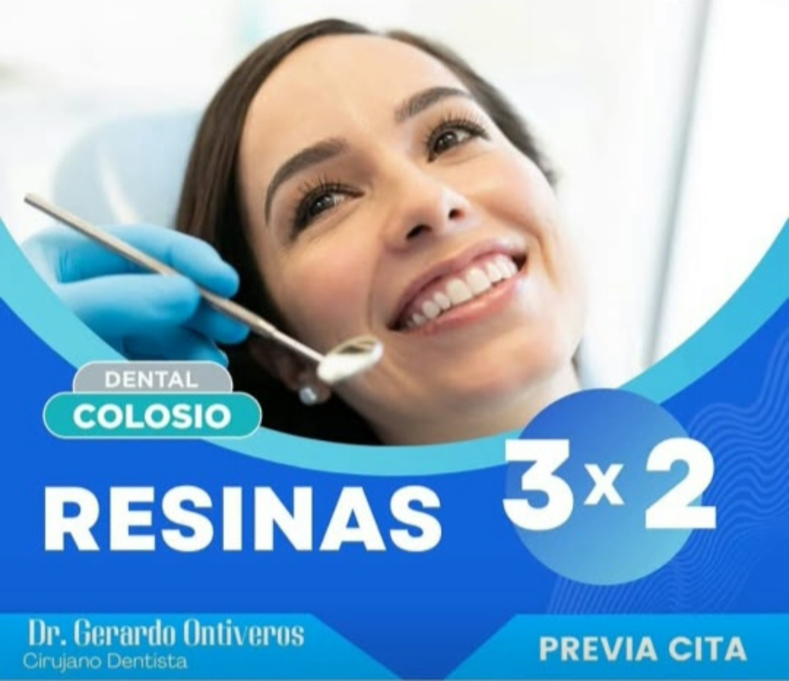
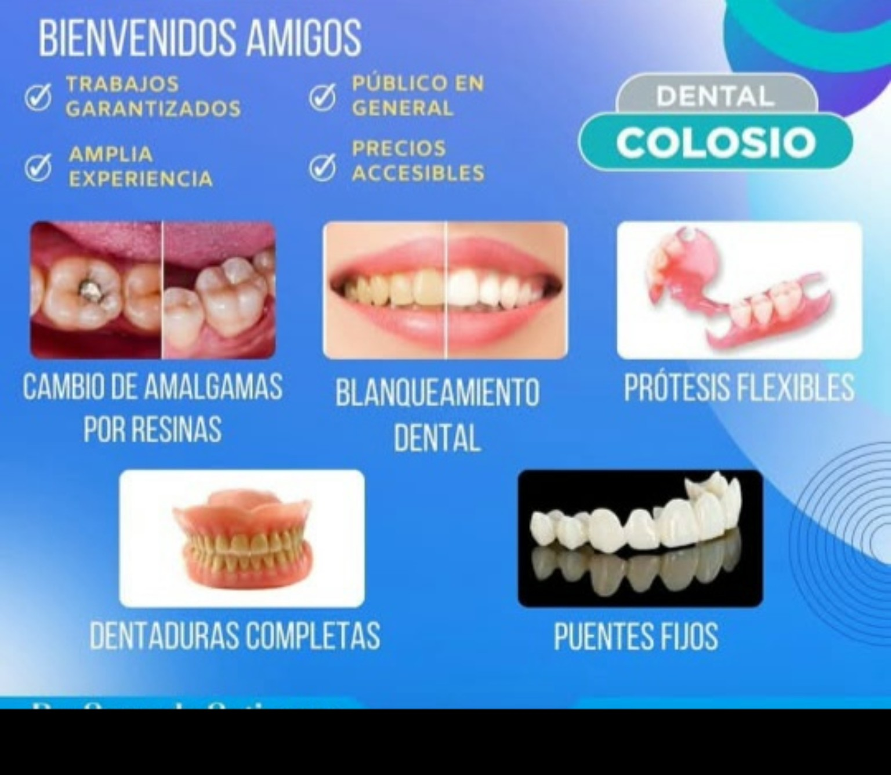
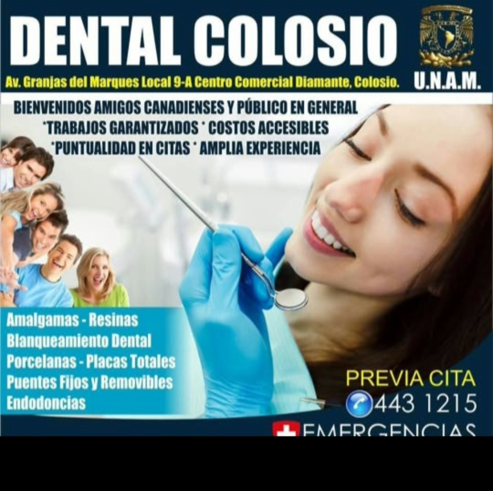
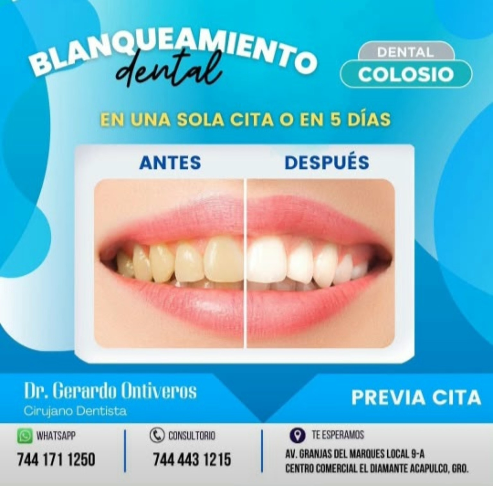

Amalgamas y resinas
Restauraciones dentales de acuerdo con valoración.
Atención dental cercana y profesional en Dental Colosio. El Dr. Gerardo de Jesús Ontiveros Tenorio te acompaña para encontrar la atención que necesitas.

Cuéntanos qué necesitas y solicita una cita de valoración. El tratamiento adecuado se define de forma personalizada.
Restauraciones dentales de acuerdo con valoración.
Opciones para mejorar la apariencia de tu sonrisa.
Puentes fijos y removibles, Valplast y placas totales.
Alternativas estéticas en cerámica y porcelana.
Atención de conductos con cita de valoración.
Consulta opciones de tratamiento y seguimiento.
Tratamiento estético sujeto a evaluación dental.
Atención a visitantes en Acapulco, previa cita.
El Dr. Gerardo de Jesús Ontiveros Tenorio, cirujano dentista egresado de la U.N.A.M., brinda atención en Dental Colosio. Su objetivo es que cada paciente se sienta escuchado y bien orientado durante su visita.
La primera conversación nos ayuda a conocer tus necesidades y explicarte las opciones disponibles para tu caso.
Imágenes del consultorio mostradas completas, tal como fueron compartidas.




Consulta por WhatsApp la vigencia de cualquier promoción que aparezca en las imágenes.
Escríbenos para consultar disponibilidad y agendar tu visita.
Escríbenos por WhatsApp para consultar disponibilidad y agendar en el horario del consultorio.
Agendar por WhatsApp